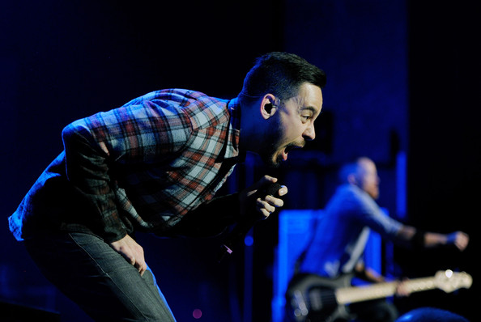
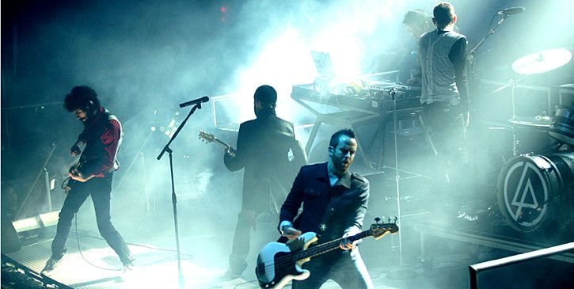
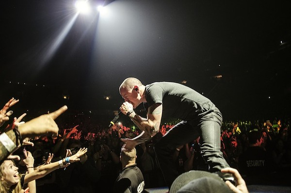
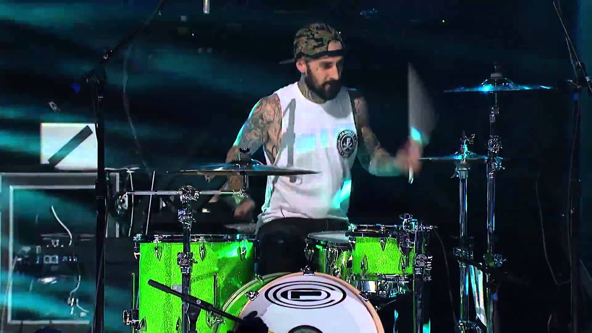
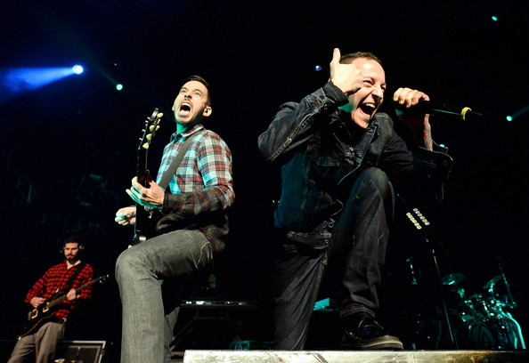
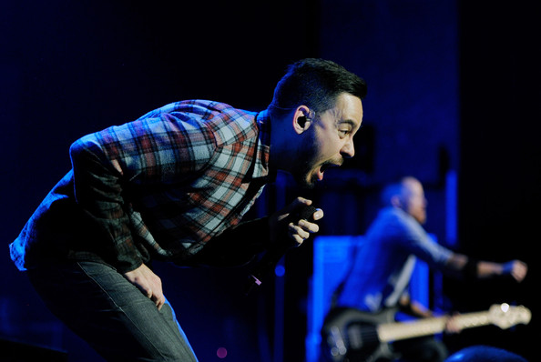
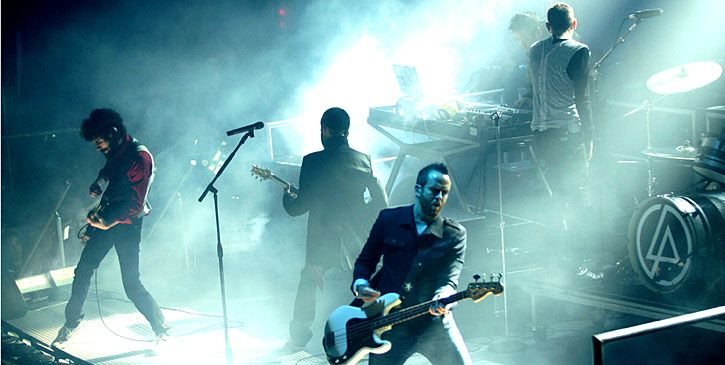
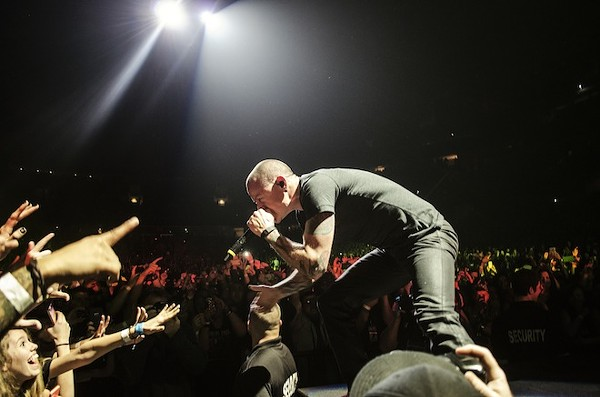
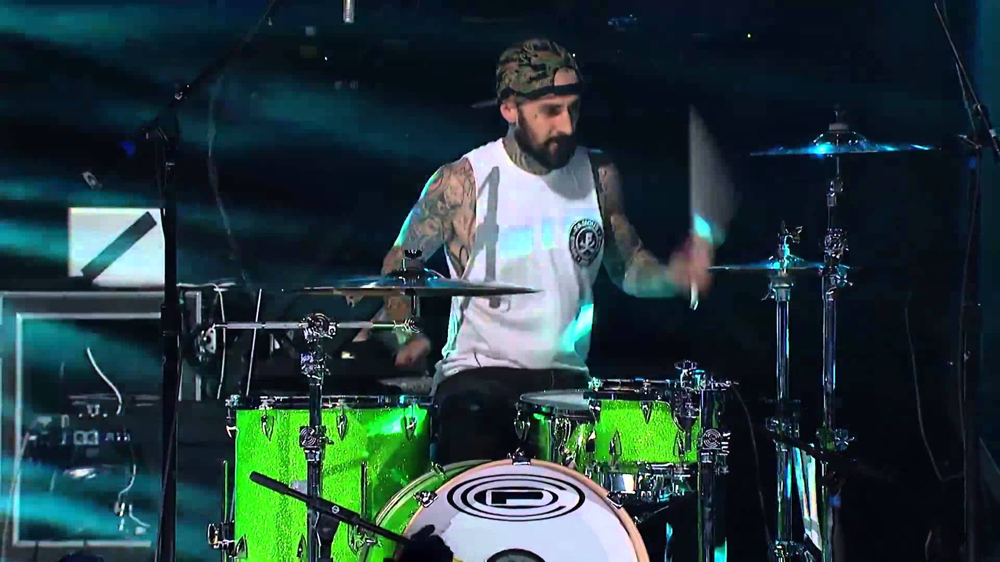
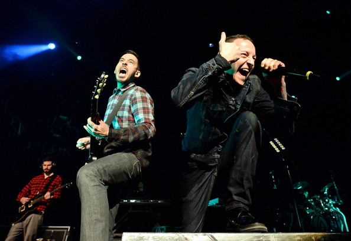

Grupa Linkin Park narodziła się w 1996 roku w Agoura Hills, na przedmieściach Los Angeles. Za jej powstanie odpowiedzialni są gitarzysta Brad Delson, perkusista Rob Bourdon i rapujący, grający na gitarze rytmicznej, klawiszach oraz zajmujący się produkcją, mający japońskie korzenie Mike Shinoda. Wszyscy poznali się jeszcze w szkole podstawowej i wszyscy fascynowali się muzyką oraz chcieli ją grać. Swoje plany zaczęli na poważnie wcielać w czyn po skończeniu szkoły średniej. Wtedy na ich drodze pojawili się didżej i klawiszowiec Joe Hahn oraz basista Dave Farrell ksywka Phoenix. W składzie powstającego zespołu, który otrzymał nazwę Xero, był jeszcze Mark Wakefield, wokalista. Młodzieńcy rozpoczęli intensywne próby, koncertowali kiedy się dało i nagrywali demo, które ukazało się w 1997 roku. Niestety, okazało się, że na muzykę Xero nie ma większego zapotrzebowania, co prowadziło do nieporozumień i frustracji. W rezultacie Wakefield odszedł z grupy.
Xero stanęło przed koniecznością znalezienia wokalisty. Polecony został Chester Bennington z Arizony, wcześniej śpiewający w post-grunge'owej kapeli Grey Daze. I zdecydowano się go zatrudnić, ponieważ prezentował niezwykle dynamiczny styl śpiewania. Wraz ze zmianą składu nastąpiła też zmiana nazwy zespołu, na Hybrid Theory. Szybko okazało się, że wokale Chestera i Shinody doskonale się uzupełniają, chemia w zespole była znakomita. To na pewno pomogło podczas prac nad debiutanckim krążkiem. W ich trakcie nastąpiła kolejna, tym razem już ostateczna, zmiana nazwy na Linkin Park - na cześć Lincoln Park w Santa Monica.
Zespołowi udała się rzecz bardzo ważna - zdobył kontrakt z renomowaną wytwórnią Warner Bros. Umowę podpisano w 1999 roku. I już rok później bossowie firmy mogli zacierać ręce z powodu znakomitych wpływów po wydaniu debiutanckiego krążka Linkin Park - "Hybrid Theory". Album osiągnął fenomenalny sukces (w samych USA kupiło go ponad 10 mln ludzi; do dziś rozeszło się 24 mln; w Polsce krążek pokrył się platyną), do którego wydatnie przyczyniły się znakomite single "Crawling" i "One Step Closer". Piosenki Linkin Park zaczęły pojawiać się na ścieżkach dźwiękowych popularnych filmów (m.in. "Dracula 2000"). Grupa otrzymała Grammy za piosenkę "Crawling" ("Najlepsze nagranie hardrockowe"), a także nagrodę MTV za klip "In The End". Linkin Park stali się wielką, światową gwiazdą, zapraszaną na prestiżowe trasy i festiwale.
Promując "Hybrid Theory" Linkin Park zagrali aż 320 koncertów w 12 miesięcy. Po zakończeniu trasy i krótkim odpoczynku muzycy zabrali się do pracy nad drugą płytą. Poprzedzili ją przygotowaniem krążka z remiksami, zatytułowanego "Reanimation" (2002). Niespełna rok po nim do sklepów trafiła płyta "Meteora". I okazało się że sukces Linkin Park nie był jednorazowym przypadkiem. Album zadebiutował na szczycie "Billboardu" (w Polsce miejsce 3.) i został multiplatynowy. Znowu zespół wylansował kilka hitów, choćby "Somewhere I Belong", "From The Inside", "Numb", "Breaking The Habit". Zespół wyruszył na potężną trasę koncertową, w trakcie której miał okazję supportować Metallicę. Pokłosiem tournée jest album live "Live In Texas" wydany w formie CD/DVD w 2003 roku.
Rok później pojawił się efekt kolaboracji, która dla wielu fanów była zaskoczeniem. Muzycy Linkin Park połączyli bowiem siły z Jayem-Z. Stało się tak z inicjatywy stacji MTV i zaowocowało wydawnictwem "Collision Course", zawierającym sześć tzw. mash-upów, czyli zmieszanych utworów obu wykonawców. EP-ka nie została przyjęta dobrze, ale dobrze się sprzedała, w USA pokrywając się platyną. No i dała Linkin Park drugą statuetkę Grammy za nagranie "Numb/Encore" ("Najlepsza kolaboracja rock/rap"). Aby nie nastąpiło zmęczenie materiału muzycy Linkin Park zajęli się następnie pobocznymi projektami (np. Fort Minor Shinody), okazjonalnie grywając duże koncerty ("Live 8"), wspierając akcje charytatywne.
Do produkcji trzeciego albumu Linkin Park wybrali renomowanego Ricka Rubina. Okazało się to być doskonałym posunięciem. Zespół nic nie stracił, a zyskał świeże, nieco inne, bardziej głębokie brzmienie. Mniej było rapu, więcej melodii. Album "Minutes To Midnight" (2007) po obu stronach Atlantyku znalazł się na pierwszym miejscu notowań. Linkin Park promując to wydawnictwo zawitali po raz pierwszy do Polski. W 2007 roku zagrali świetny koncert na Stadionie Śląskim w Chorzowie jako support Pearl Jam. Wtedy odebrali złotą płytę za "Minutes To Midnight". Płytę promowały znakomite piosenki - "What I've Done", "Bleed It Out", "Shadow Of The Day", "Given Up", "Leave Out All The Rest". Można je było później odnaleźć na licznych ścieżkach dźwiękowych (m.in. "Transformers").
Linkin Park, poza polskim przypadkiem, byli główną gwiazdą wszystkich dużych imprez. Że na żywo byli coraz lepsi, dowodzi następne koncertowe wydawnictwo "Road To Revolution: Live At Milton Keynes", zawierające występ z czerwca 2008 na wielkim stadionie Milton Keynes. Naładowani energią i pomysłami muzycy już w 2008 roku zaczęli pisać piosenki na kolejny krążek. Zapowiedzieli, że w studiu ponownie spotkają się z Rickiem Rubinem. Podgrzewali atmosferę przed premierą mówiąc w wywiadach, że to największe wyzwanie, przed jakim stanęli, najbardziej fascynujący projekt. Okazało się że nie były to tylko słowa rzucone na wiatr.
Linkin Park pokazali na albumie "A Thousand Suns" (2010), że lubią być nieprzewidywalni. Płyta była bardziej elektroniczna, ilustracyjna. Recenzje były mieszane, ale wydawnictwo odniosło sukces komercyjny. Także w Polsce, gdzie dość szybko pokryło się złotem. Album promowała piosenka "The Catalyst". Z tym numerem wiąże się wątek polski. 9 lipca 2010 roku zespół ogłosił konkurs "Linkin Park Featuring You", polegający na zmiksowaniu fragmentu tego utworu. Uczestnicy dysponowali pięcioma podkładami udostępnionymi przez zespół. Zwycięzcą konkursu został Polak o ksywce NoBrain ze Świdnicy. Za brzmienie kolejnego albumu "Living Things" z 2012 roku odpowiedzialny był legendarny producent Rick Rubin. - Dobre wieści są takie: Linkin Park na dobre wyrośli z udawanej agresji i małolackiego gniewu, nie w głowie im też porywanie się na epickie superprodukcje. "Living Things" to urozmaicona, przebojowa płyta mogąca trafić zarówno do dzieciaków machających głowami na rockowych koncertach, jak i tych podrygujących przy komercyjnym dubstepie. A starzy fani... kto ich tam wie, może już dawno przerzucili się na inne zabawki? - pisał w recenzji Sebastian Rerak. W 2014 roku ma ukazać się kolejna płyta - "The Hunting Party ".

 








